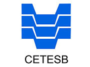

Quem Somos??
A Ecofabris é um projeto socioambiental de reciclagem de equipamentos eletrônicos. Todos podem colaborar com o projeto doando seus equipamentos eletrônicos que não são mais utilizados (Funcionando ou Danificado). O que funciona é integrado para ser utilizado como ferramenta de trabalho em nossos cursos, o que não pode ser utilizado ou está danificado é encaminhado para nossos agentes de reciclagem. Assim além de contribuir para um planeta mais limpo e sustentável, você também auxilia para captação de novos profissionais na área de TI.Descarte com uma instituição que respeita as leis ambientais!
A Ecofabris possui as licenças necessárias para atuar no mercado com respeito e respaldo das seguintes instituições: